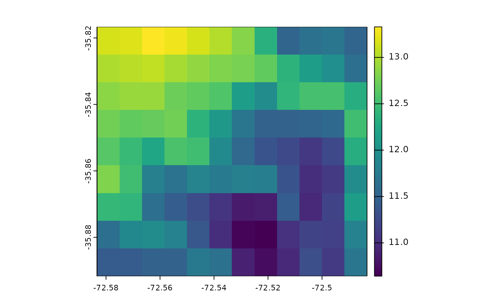
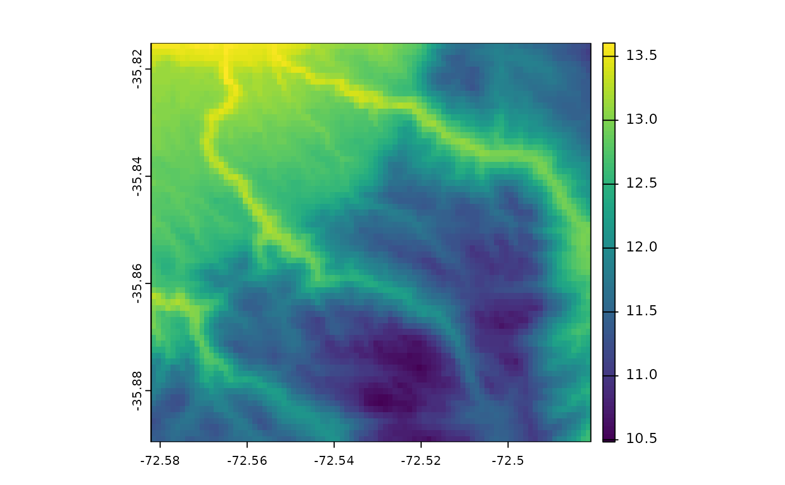

This function performs downscaling of spatial data using regression methods, including linear regression (lm), generalized linear model (glm), and geographically weighted regression (gwr). It ensures that all input rasters have the same CRS and extent, resamples the response raster if necessary, and checks the overlap percentage between the high-resolution predictor and low-resolution predictor rasters.
Arguments
- response
SpatRaster. The response variable raster (e.g., temperature) at low resolution.
- pred.lr
SpatRaster. The low-resolution predictor raster(s) (e.g., elevation at low resolution).
- pred.hr
SpatRaster. The high-resolution predictor raster(s) (e.g., elevation at high resolution) to be used for prediction.
- method
Character. The method used for downscaling. Options are "lm" for linear regression, "glm" for generalized linear model, and "gwr" for geographically weighted regression. Default is "gwr".
- cl
Optional. A cluster object for parallel processing. Default is NULL.
Details
The function checks that all rasters share the same CRS and extent. If the extents are not identical, it resamples the response raster to match the low-resolution predictor raster using bilinear interpolation. It also calculates the overlap percentage between the high- and low-resolution rasters and stops execution if the overlap is less than 60%.
The response raster is the variable of interest at a lower resolution (e.g., temperature), while pred.lr and pred.hr are the predictors at low and high resolutions, respectively (e.g., elevation). If the method is "lm" or "glm", it fits the model using the response and low-resolution predictor raster data and returns the model and the predicted high-resolution raster. If the method is "gwr", it performs geographically weighted regression using the provided spatial data and returns the result.
Examples
library(terra)
# Load sample data
data(dem)
data(elev)
data(tavg)
# Convert to SpatRaster objects
tavg <- rast(tavg) # Response raster (e.g., temperature)
elev <- rast(elev) # Low-resolution predictor (e.g., elevation at low resolution)
dem <- rast(dem) # High-resolution predictor (e.g., elevation at high resolution)
dem<-aggregate(dem,2)
# Apply the downscale function with GWR method
result <- downscale(response = tavg, pred.lr = elev, pred.hr = dem, method = "gwr")
#> Warning: [expanse] unknown CRS. Results can be wrong
#> Warning: [expanse] unknown CRS. Results can be wrong
# View the model and predicted high-resolution raster
print(result$model)
#> Call:
#> gwr(formula = formula, data = data, bandwidth = bwG, adapt = adG,
#> hatmatrix = TRUE, longlat = longlat, cl = cl, predictions = TRUE)
#> Kernel function: gwr.Gauss
#> Adaptive quantile: 0.005952041 (about 0 of 108 data points)
#> Summary of GWR coefficient estimates at data points:
#> Min. 1st Qu. Median 3rd Qu. Max. Global
#> X.Intercept. 13.6043186 13.8297466 13.9353450 14.0102181 14.3091637 13.8224
#> altitude -0.0053626 -0.0048709 -0.0047733 -0.0045006 -0.0036525 -0.0045
#> Number of data points: 108
#> Effective number of parameters (residual: 2traceS - traceS'S): 83.43652
#> Effective degrees of freedom (residual: 2traceS - traceS'S): 24.56348
#> Sigma (residual: 2traceS - traceS'S): 0.007612498
#> Effective number of parameters (model: traceS): 63.9723
#> Effective degrees of freedom (model: traceS): 44.0277
#> Sigma (model: traceS): 0.00568603
#> Sigma (ML): 0.003630449
#> AICc (GWR p. 61, eq 2.33; p. 96, eq. 4.21): -573.1605
#> AIC (GWR p. 96, eq. 4.22): -843.1112
#> Residual sum of squares: 0.001423457
#> Quasi-global R2: 0.9999733
plot(tavg)

plot(result$result)
